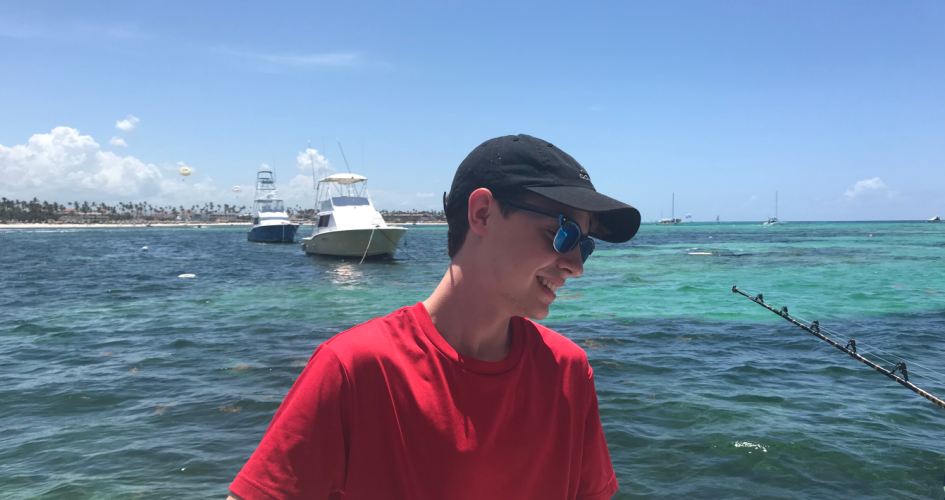

This website is lovingly dedicated to my family and closest friends, who have been my rock throughout every step of my journey. To my parents, who taught me the value of hard work and perseverance, and to my friends, whose encouragement kept me motivated through both successes and setbacks. Your belief in me has been a guiding light, inspiring me to push beyond my limits and embrace every challenge with confidence.
Without your unwavering support and love, none of this would have been possible. This web page, and all the work within it, is a testament to the strength, guidance, and encouragement you’ve given me. Thank you for standing by me and helping me reach heights I once thought were out of reach.
My mission is to uplift the local tech community by sharing the knowledge I've gained and fostering an environment of integrity, collaboration, and continuous growth. Through leading by example, I aim to inspire others in their journey toward technical excellence.
I am dedicated to supporting developers, IT professionals, and organizations in building secure, efficient, and scalable systems. My goal is to exceed expectations by delivering solutions that are thoughtfully designed and user-centered.
Driven by the evolving world of technology, I embrace challenges as opportunities for growth. By staying curious and persistent, I strive to contribute positively to the broader tech landscape while growing personally and professionally.
Hi, I'm Kyle McColgan, an IT professional based in Saint Louis, Missouri. I specialize in full-stack web development and information security, combining a strong computer science background with hands-on experience. My focus lies in creating secure, scalable solutions that deliver real-world impact.
I thrive on solving complex problems—whether it's building responsive web interfaces or securing network infrastructures. My approach blends thoughtful design with robust functionality, ensuring that the systems I develop not only meet technical requirements but also exceed user expectations.
Outside of work, I stay engaged with the latest tech trends, experiment with new frameworks, and contribute to open-source projects. I believe in continuous learning and actively seek opportunities to grow, adapt, and stay ahead in this dynamic field.
If you're looking for a dedicated developer who values quality, creativity, and collaboration, let's connect. I'm excited to explore how we can work together to bring innovative ideas to life and elevate the tech community.